Úvod / Galéria
Naša výroba na vlastné oči
Hotové septiky, schody aj zábery priamo z našej výroby a dvora v Plevníku-Drienovom.
0 fotiek v 0 kategóriách
zvaranie.webp

expedicia.webp

nakladka.webp

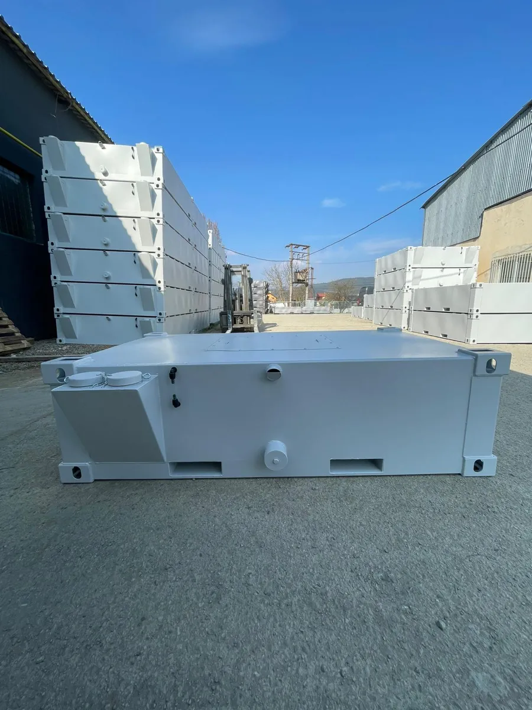
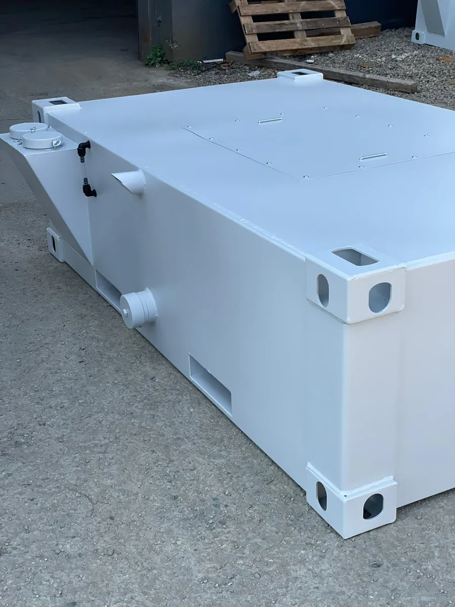
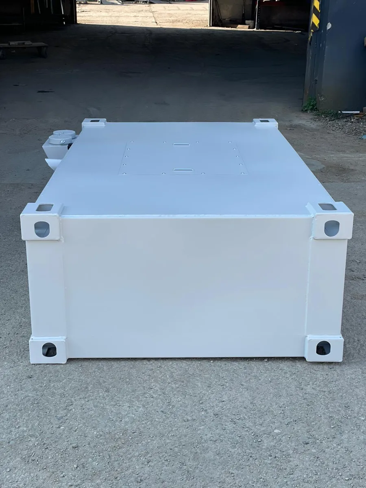
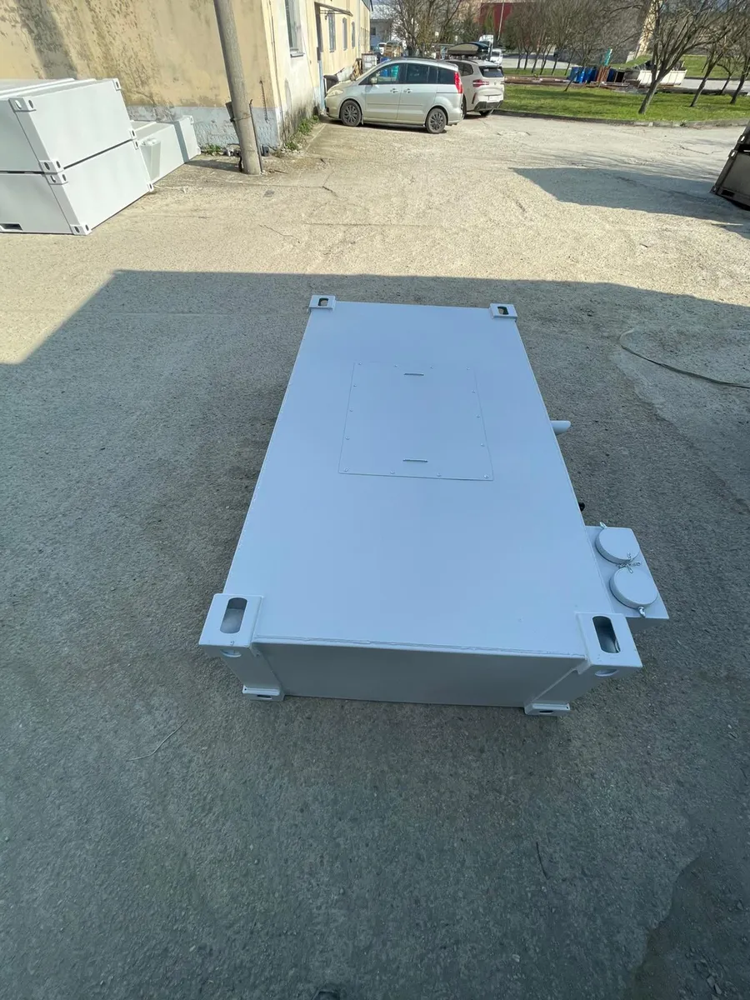
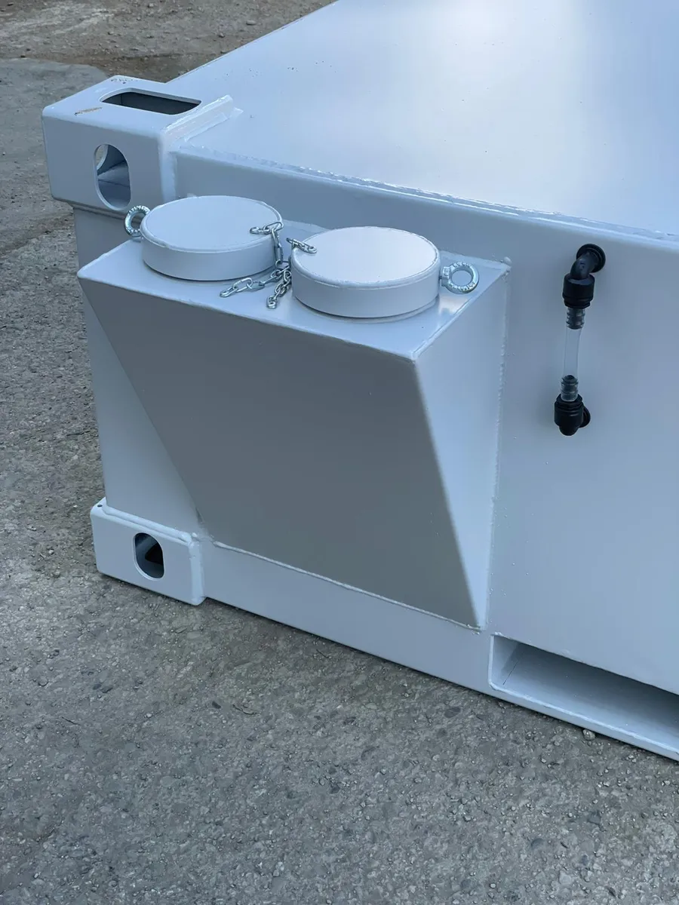
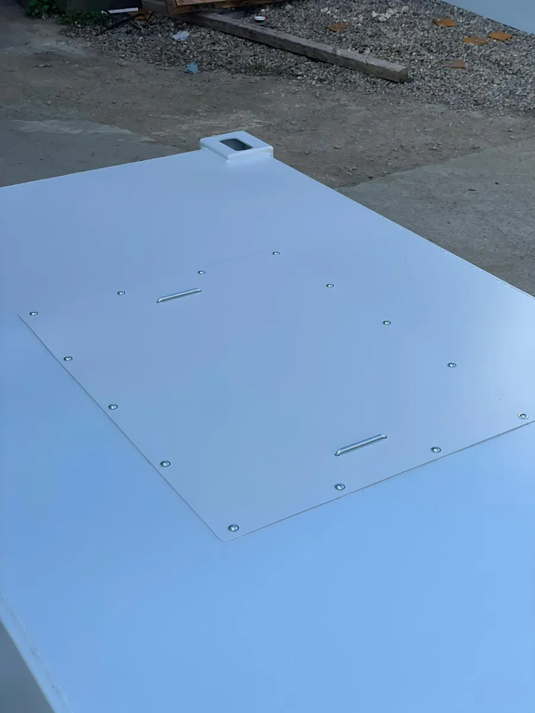
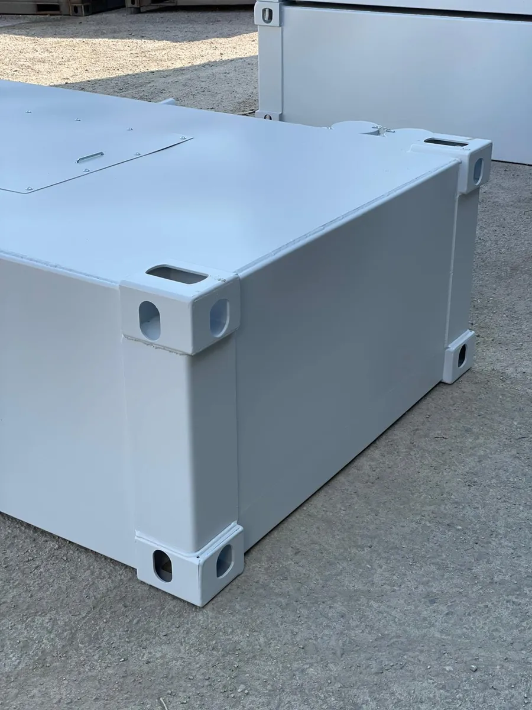
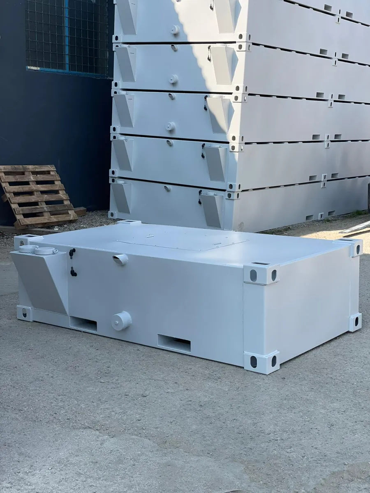
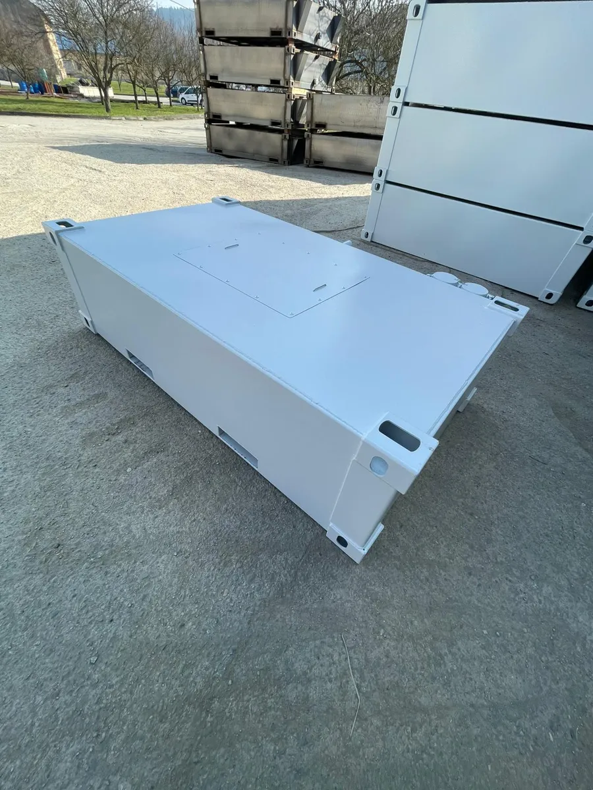
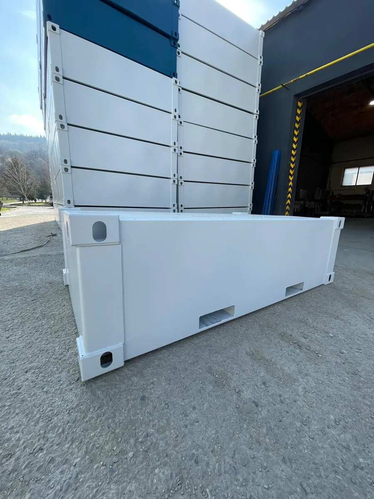
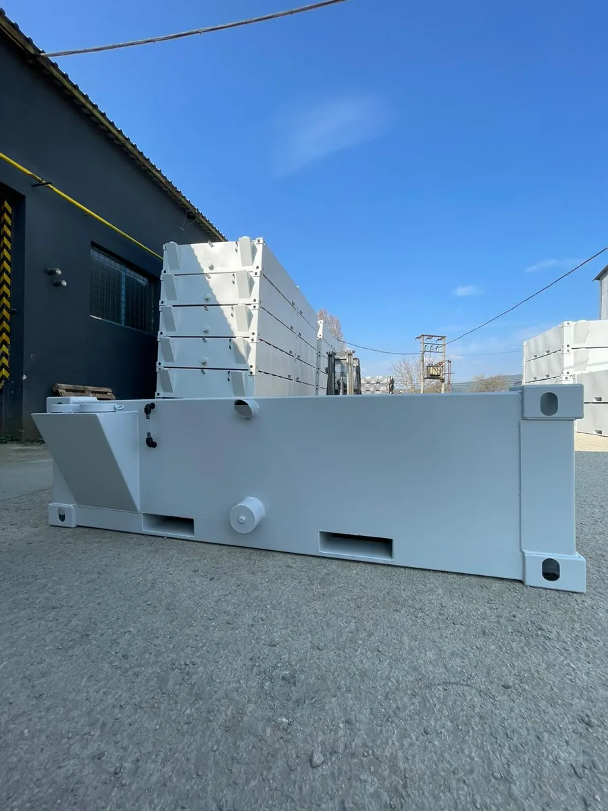
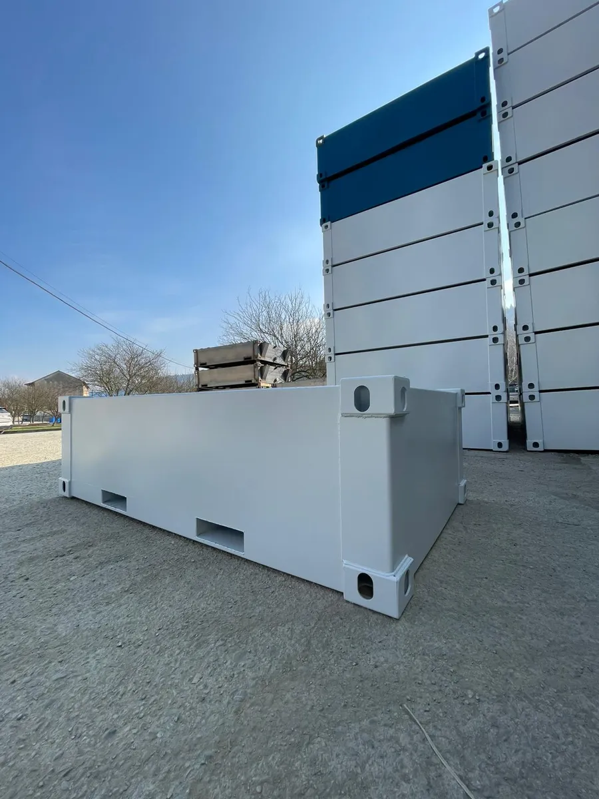
Viac fotiek nájdete na Instagrame a Facebooku
Pravidelne zverejňujeme hotové výrobky, expedície aj zábery z výroby.